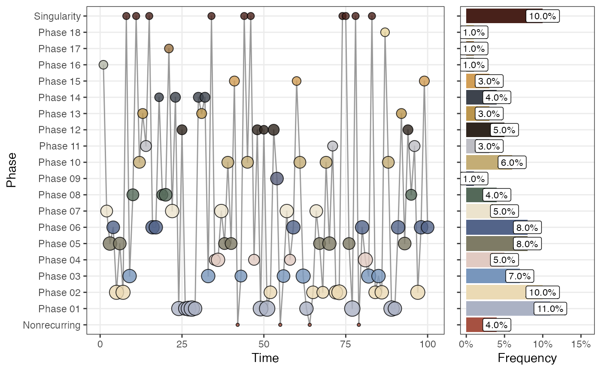

Plot the sequence of phases as a time series.
Usage
plotRN_phaseTimeSeries(
phaseOutput,
showEpochLegend = TRUE,
epochColours = NULL,
epochLabel = "Phase",
excludeVars = "",
excludePhases = "",
returnGraph = FALSE
)Arguments
- phaseOutput
Output from function rn_phaseInfo
- excludeVars
Exclude specific dimension variables by name. Leave empty to include all variables (default =
"")- excludePhases
Exclude Phases by their name (variable
phase_name). Leave empty to include all Phases (after the other exclusion arguments) (default ="")
Examples
RN <- rn(y1 = rnorm(100), weighted = TRUE)
#> `emRad` was set to NA due to the value `weighted = TRUE`, if you want an unthresholded matrix set `weighted = FALSE`
#> Set `weightedBy` to 'si' due to the value `weighted = TRUE`
phase_out <- rn_phaseInfo(RN)
#>
#> ~~~o~~o~~casnet~~o~~o~~~
#>
#> Recurring states with high similarity will be considered a phase
#>
#>
#> Looking for phases...
#> State at time 28 is template for phase 1
#> State at time 73 is template for phase 2
#> State at time 62 is template for phase 3
#> ...Found state(s) already assigned to a phase in a previous iteration step:
#> ...State at t=77 [Phase 01.9] | State at t=89 [Phase 01.10] >> will be labelled as Transient(s)
#>
#> State at time 81 is template for phase 4
#> ...Found state(s) already assigned to a phase in a previous iteration step:
#> ...State at t=5 [Phase 02.1] | State at t=7 [Phase 02.2] | State at t=72 [Phase 02.6] | State at t=97 [Phase 02.10] >> will be labelled as Transient(s)
#>
#> State at time 3 is template for phase 5
#> State at time 16 is template for phase 6
#> State at time 22 is template for phase 7
#> ...Found state(s) already assigned to a phase in a previous iteration step:
#> ...State at t=68 [Phase 02.5] | State at t=84 [Phase 02.8] | State at t=86 [Phase 02.9] >> will be labelled as Transient(s)
#>
#> State at time 20 is template for phase 8
#> ...Found state(s) already assigned to a phase in a previous iteration step:
#> ...State at t=9 [Phase 03.1] | State at t=43 [Phase 03.3] | State at t=56 [Phase 03.4] >> will be labelled as Transient(s)
#>
#> State at time 54 is template for phase 9
#> ...Found state(s) already assigned to a phase in a previous iteration step:
#> ...State at t=2 [Phase 07.1] | State at t=10 [Phase 07.3] | State at t=19 [Phase 07.5] | State at t=37 [Phase 08.1] | State at t=66 [Phase 08.2] | State at t=95 [Phase 08.4] >> will be labelled as Transient(s)
#>
#> State at time 12 is template for phase 10
#> State at time 14 is template for phase 11
#> ...Found state(s) already assigned to a phase in a previous iteration step:
#> ...State at t=6 [Phase 05.2] | State at t=40 [Phase 05.4] >> will be labelled as Transient(s)
#>
#> State at time 53 is template for phase 12
#> State at time 13 is template for phase 13
#> ...Found state(s) already assigned to a phase in a previous iteration step:
#> ...State at t=26 [Phase 01.2] >> will be labelled as Transient(s)
#>
#> State at time 23 is template for phase 14
#> State at time 41 is template for phase 15
#> ...Found state(s) already assigned to a phase in a previous iteration step:
#> ...State at t=17 [Phase 06.3] >> will be labelled as Transient(s)
#>
#> State at time 1 is template for phase 16
#> State at time 21 is template for phase 17
#> State at time 87 is template for phase 18
#>
#> Found 18 phases with at least 2 states.
plotRN_phaseTimeSeries(phase_out)
